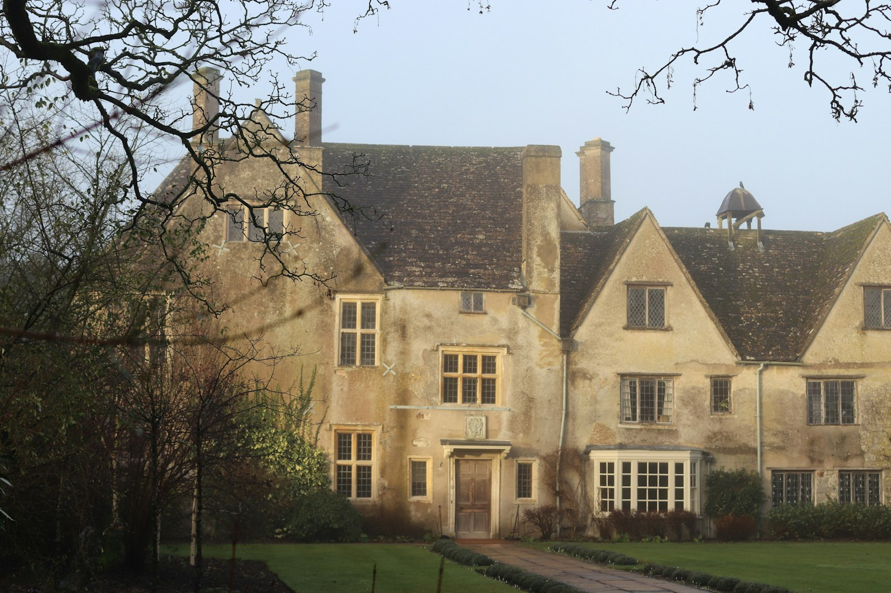
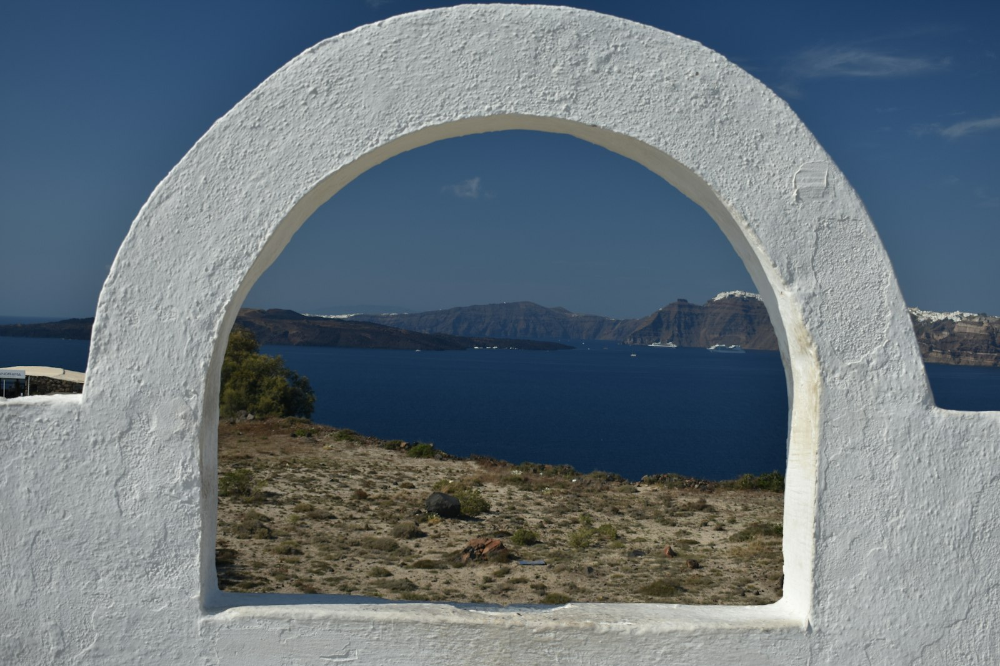
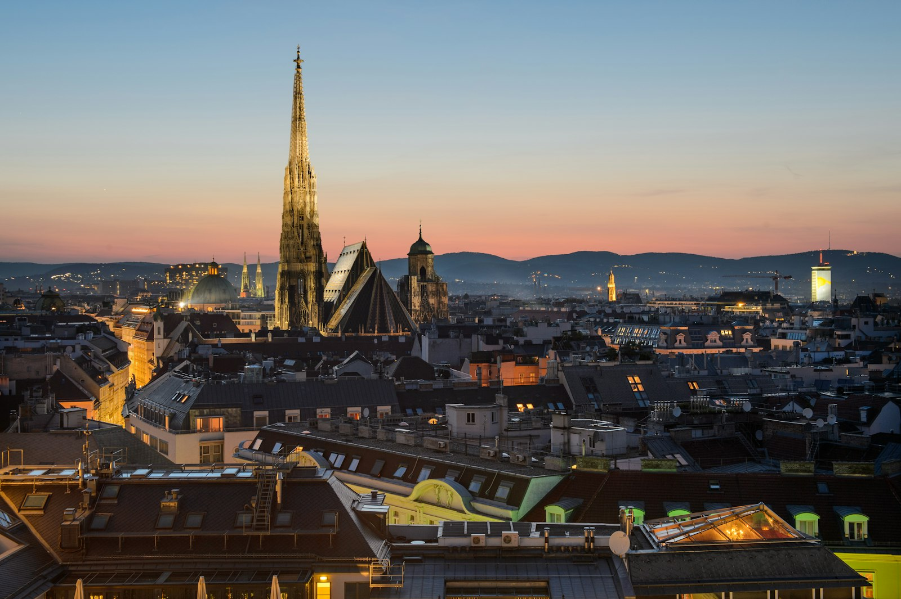

Maison Krizsan
Certain places deserve to be kept.
In photograph. In film. In record.
The House
The world changes quickly. Some places do not.
Architecture that carries memory. Craftsmanship that reveals intention. Hospitality practiced as an art. Maison Krizsan exists to preserve these places, through photography, film, and editorial record.
The Philosophy
Some places are beautiful. Fewer are true. We look for the difference.
Presence
The atmosphere that remains long after the moment has passed.
Craft
The details shaped through patience, intention, and human hands.
Permanence
What deserves remembrance, we do not let disappear.
Destinations





The Archive
Not everything is kept. What remains, remains for a reason.
Films
Moving portraits preserving the atmosphere and spirit of place.
Editions
Limited photographic works created as lasting records of place.
Journal
Observations on architecture, culture, craftsmanship, and heritage.
The Krizsan Standard
We believe a place is not luxurious because of what it offers. It is luxurious because of what it remembers.
- Time.
- Places shaped by history.
- Craft.
- Details formed through human hands.
- Place.
- Locations with a distinct spirit.
- Legacy.
- Beauty worthy of preservation.
Inquiries
Maison Krizsan works with a small number of hotels, villas, estates, and destinations each year. The requirement is not size or fame. It is character that has been earned, not designed.
Each relationship begins with a shared appreciation for atmosphere, character, and legacy.
Begin a ConversationMaison Krizsan
Independent visual house
California · Europe
Established 2026